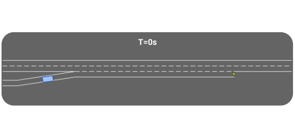
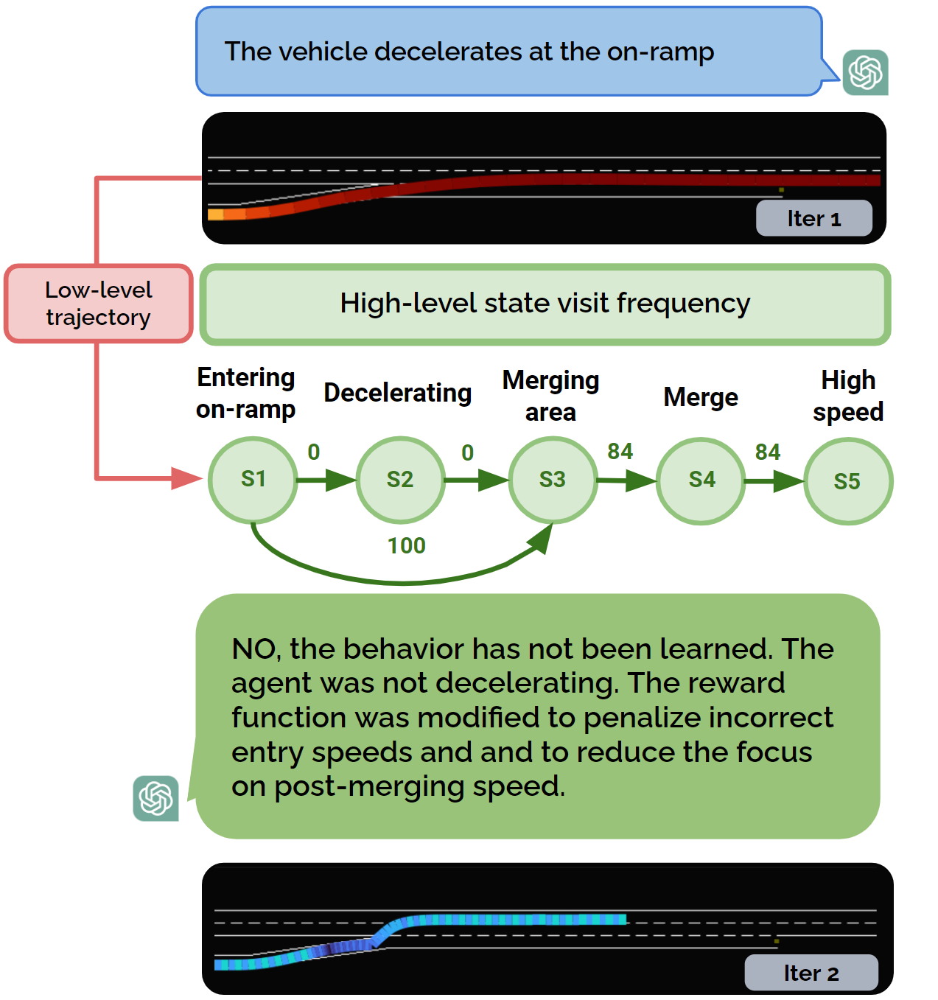
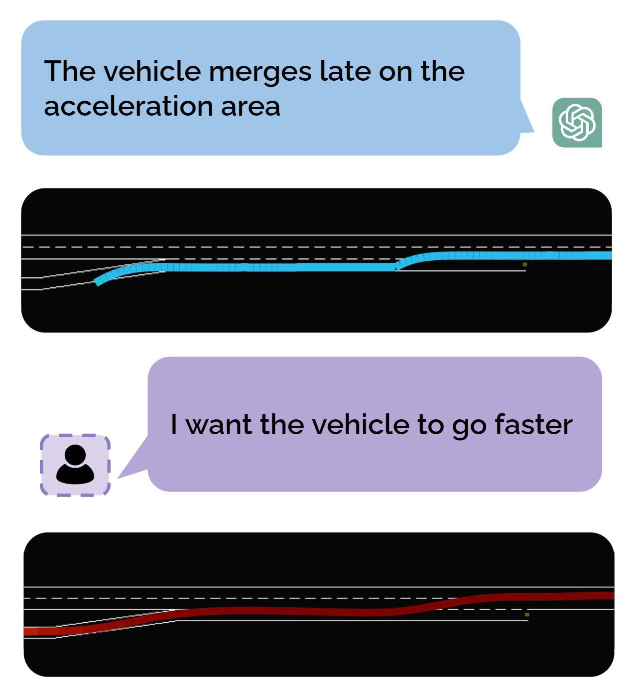

Generating varied scenarios through simulation is crucial for training and evaluating safety-critical systems, such as autonomous vehicles. Yet, the task of modeling the trajectories of other vehicles to simulate diverse and meaningful close interactions remains prohibitively costly. Adopting language descriptions to generate driving behaviors emerges as a promising strategy, offering a scalable and intuitive method for human operators to simulate a wide range of driving interactions. However, the scarcity of large-scale annotated language-trajectory data makes this approach challenging.
To address this gap, we propose Text-to-Drive (T2D) to synthesize diverse driving behaviors via Large Language Models (LLMs). We introduce a knowledge-driven approach that operates in two stages. In the first stage, we employ the embedded knowledge of LLMs to generate diverse language descriptions of driving behaviors for a scene. Then, we leverage LLM's reasoning capabilities to synthesize these behaviors in simulation. At its core, T2D employs an LLM to construct a state chart that maps low-level states to high-level abstractions. This strategy aids in downstream tasks such as summarizing low-level observations, assessing policy alignment with behavior description, and shaping the auxiliary reward, all without needing human supervision. With our knowledge-driven approach, we demonstrate that T2D generates more diverse trajectories compared to other baselines and offers a natural language interface that allows for interactive incorporation of human preference.
The low-level state translator has three primary responsibilities: it (1) decomposes the behavior, (2) maps lower-level states to abstract states, and (3) records abstract state visits. As a result, the state translator takes in the low-level states and outputs the the history of abstract state visits.
The abstract state history is a record of abstract states visits by the vehicle. This enables both the ability to identify current state occupancy and track state visits and transitions.
The primary function gives a reward only when the vehicle exhibits the target behavior, using a finite-state machine for formal verification of behavior emergence.
Here, we demonstrate the LLM's reasoning process, where it reads a high-level behavior sequence, analyzes it, and then provides an accurate summary of the low-level trajectories. The behavior we wished to simulate is "coming to a complete stop before merging."
The auxiliary iterator LLM analyzes the policy after training to decide whether and how to adjust the auxiliary function based on the history of abstract state visits.
T2D also offers a natural language interface to incorporate human preferences into the driving trajectories.
